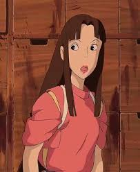

Lin
Lin, também conhecida por seu nome japonês Rin, é uma funcionária de Yuna no filme "A Viagem de Chihiro" do Studio Ghibli. Ela é uma empregada no Balneário de Yubaba, no Reino dos Espíritos. Ela se torna a cuidadora de Chihiro Ogino quando esta última (como Sen) é designada a ela como assistente, e a ajuda várias vezes durante o curso do filme.
Espécie
Lin é retratada como um ser humano no filme. No livro de imagens japonês (The Art of Spirited Away em inglês) Lin é descrita como um byakko, um tigre branco, no rascunho, que mais tarde foi mudado para byakko, que significa raposa branca. No livro de imagens em inglês, "byakko" é traduzido como doninha.
Personalidade
Lin é muito forte, teimosa e, ocasionalmente, mandona. Embora tenha bom coração e cuide de Chihiro, ela é rápida na defensiva e suas atitudes e palavras são, muitas vezes, sarcásticas. Ela também é muito protetora, pois esconde Chihiro quando Yubaba deseja vê-la, e também conforta Chihiro enquanto tenta curar o Espírito do Rio, dizendo a ela que não deixará que ele a magoe.
Mas ela nem sempre é cooperativa. Kamajī tem que lhe dar um tritão assado para mudar de idéia sobre o acompanhamento de Chihiro a Yubaba. Mais tarde, ela usa o tritão para desviar um de seus colegas de trabalho do cheiro humano de Chihiro. Quando Chihiro consegue um emprego no balneário, ela fica totalmente feliz com isso.
Aparência física
Lin tem olhos castanhos de chocolate, cabelos lisos e longos também castanhos com franja curta separada no meio. O comprimento de seus cabelos passa pela cintura e a ponta é amarrada com uma fita rosa cravo. Ela veste um uniforme jinbei padrão de cor salmão com uma camiseta amarela brilhante e um avental azul turquesa que a maioria das funcionárias usa.